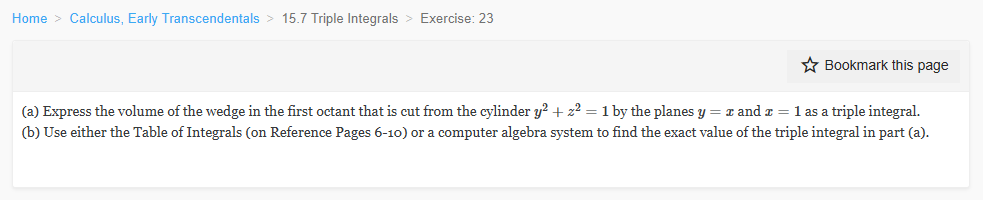

Please solve the problem in the following image.
(Image `20260929_020949_028191_utc_0800_0.png`. Alt text: Image: human_20260929_020949_028191_utc_0800)

20260929_020949_028191_utc_0800_0.png
End of problem
Answer
## Setting Up the Region
The wedge is bounded by:
- **First octant:** $x \geq 0$, $y \geq 0$, $z \geq 0$
- **Cylinder:** $y^2 + z^2 \leq 1$ (i.e., $z \leq \sqrt{1-y^2}$ since $z \geq 0$)
- **Plane $y = x$:** gives $x \geq y$
- **Plane $x = 1$:** gives $x \leq 1$
Because $y \leq x \leq 1$ and $y^2 \leq 1$, we have $0 \leq y \leq 1$.
For a fixed $y$, the cross-section perpendicular to the $y$-axis is a rectangle in the $xz$-plane with $y \leq x \leq 1$ and $0 \leq z \leq \sqrt{1-y^2}$.
(Image `pyplot_1.png`. Alt text: 3D view of wedge region)
## Part (a): The Triple Integral
$$
\boxed{V = \int_0^1 \!\int_y^1 \!\int_0^{\sqrt{1-y^2}} dz\, dx\, dy}
$$
## Part (b): Evaluating the Integral
**Inner integral** (with respect to $z$):
$$
\int_0^{\sqrt{1-y^2}} dz = \sqrt{1-y^2}
$$
**Middle integral** (with respect to $x$):
$$
\int_y^1 \sqrt{1-y^2}\, dx = (1-y)\sqrt{1-y^2}
$$
**Outer integral** — split into two parts:
$$
V = \int_0^1 (1-y)\sqrt{1-y^2}\, dy = \underbrace{\int_0^1 \sqrt{1-y^2}\, dy}_{I_1} - \underbrace{\int_0^1 y\sqrt{1-y^2}\, dy}_{I_2}
$$
**$I_1$** is the area of a quarter unit circle:
$$
I_1 = \frac{\pi}{4}
$$
**$I_2$** via substitution $u = 1 - y^2$, $du = -2y\,dy$:
$$
I_2 = \frac{1}{2}\int_0^1 \sqrt{u}\, du = \frac{1}{2} \cdot \frac{2}{3} = \frac{1}{3}
$$
**Therefore:**
$$
\boxed{V = \frac{\pi}{4} - \frac{1}{3} \approx 0.4521}
$$
### Geometric Interpretation
- The full half-cylinder in the first octant ($0 \le x \le 1$, $y \ge 0$, $z \ge 0$, $y^2+z^2 \le 1$) has volume $\pi/4$.
- Subtracting the half where $y > x$ (volume $1/3$) leaves the half-wedge $y \le x$.
### Verification
Computing the same triple integral in the opposite order ($dx$ outer):
$$
V = \int_0^1 \int_0^x \int_0^{\sqrt{1-y^2}} dz\, dy\, dx = \frac{\pi}{4} - \frac{1}{3} \;\checkmark
$$
Image `pyplot_2.png` not found.
---